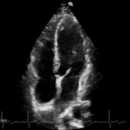
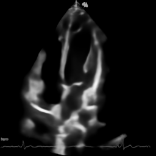

<!-- Slide 1: Intro --> <!-- Background: Abstract Medical/Tech --> <!-- Note to user: If internet is available, this background will load. Else it will be dark theme default. --> <section data-background-image="https://images.unsplash.com/photo-1576091160399-112ba8d25d1d?auto=format&fit=crop&w=1920&q=80"> <div class="dark-overlay"> <h1>AI-Driven Dehazing and Denoising of Echocardiographic Images</h1> <h2>Using GANs, Diffusion Models, and Mamba-SSM</h2> <p> <strong>CSE 498 Project</strong><br> <em>University of South Carolina</em> </p> </div> </section> --- <!-- Research Gap & Objective (3 Slides) --> # The Research Gap ## Limitations of Current Echocardiography <div class="columns"> <div> - **Diagnostic Gold Standard**: Essential for heart failure & valve disorders. - **The Problem**: Image quality is compromised by: - Acoustic impedance mismatches. - Patient body habitus (obesity). - Environmental noise and artifacts. - **Consequence**: **10-15%** of patients are **"Difficult-to-Image"**. - Conventional imaging fails. - Traditional filtering blurs details. </div> <div> <!-- Placeholder or generic echo image --> <img src="https://images.unsplash.com/photo-1530026405186-ed1f139313f8?auto=format&fit=crop&w=600&q=80" alt="Medical Imaging Context"> </div> </div> --- # The "Difficult-to-Image" Challenge ## Why manual intervention isn't enough - **Current Clinical Workarounds**: 1. Repositioning the patient (physically demanding). 2. Using alternative imaging windows (limited view). 3. Contrast agents (invasive, costly). - **Time Criticality**: Emergency delays are unacceptable. - **Research Gap**: - Natural image models don't account for **speckle noise**. - Lack of datasets with "ground truth" reference frames. --- # Our Objective ## Specialized Deep Learning Framework <div class="dark-overlay"> <strong>Goal: Simultaneous Dehazing & Denoising</strong> <br><br> <ol> <li><strong>Restore Visibility</strong>: Recover structural details.</li> <li><strong>Preserve Clinical Features</strong>: No hallucination of walls/valves.</li> <li><strong>Compare Architectures</strong>: <ul> <li>GANs (High texture)</li> <li>Diffusion Models (High quality)</li> <li><strong>Mamba SSM</strong> (Efficient Global Context)</li> </ul> </li> </ol> </div> --- <!-- Dataset Analysis (5 Slides) --> # Dataset Overview ## Source: Grand Challenge 2025 - **Origin**: [Dehazing Echo 2025 Grand Challenge](https://dehazingecho2025.grand-challenge.org/). - **Composition**: High-quality vs Degraded Echocardiograms. - **Stats**: - **Total Patients**: 75 - **Clean Images**: 4,376 (Reference) - **Noisy Images**: 2,324 (Simulated degradation) --- # Data Distribution & Structure ## Clean vs. Noisy The dataset reflects the "Difficult-to-Image" reality: - **Patients 1-75**: All have Clean (High Quality) frames. - **Patients 1-40**: Subset with **Noisy** counterparts. - **Ratio**: - **Clean-only**: ~2,000 images (Baseline) - **Paired**: ~2,300 images (Supervised Training) --- # Simulating the Challenge ## Visual Comparison <div class="comparison"> <div> <p></p> <span class="caption">Clean Ground Truth</span> </div> <div> <img src="Dataset/noisy/patient-2-4C-frame-5.png" alt="Noisy Image"> <span class="caption">Simulated Hazy/Noisy Input</span> </div> </div> *Realistic simulation of speckle noise, low contrast, and haze.* --- # Evaluation Structure: Triplet Data To ensure clinical validity, we use **Triplets**: 1. **Clean Image**: Ground Truth. 2. **Noisy Image**: Input to the model. 3. **ROI (Region of Interest) Mask**: - Focuses evaluation on key cardiac structures (Valves, Walls). - Allows computation of **CNR (Contrast-to-Noise Ratio)**. --- # Dataset Statistics <div class="columns"> <div> ### Volume - **Total Frames**: ~6,700 - **Frames per Patient**: 60 - **Cycle Coverage**: Full cardiac cycles included. </div> <div> ### Annotations - **ROI Frequency**: Every ~10 frames. - **Purpose**: Targeted evaluation avoids biasing metrics with background noise. </div> </div> --- <!-- Models: UNet, GAN, Diffusion (10 Slides) --> <!-- Background: Network --> <section data-background-image="https://images.unsplash.com/photo-1620712943543-bcc4688e7485?auto=format&fit=crop&w=1920&q=80"> <div class="dark-overlay"> <h1>Model Architectures</h1> <p>Exploring the Spectrum of Deep Learning Solutions</p> </div> </section> --- # Model 1: U-Net Architecture ## The Medical Imaging Baseline <div class="columns"> <div> - **Architecture**: Encoder-Decoder with Skip Connections. - **Mechanism**: - **Encoder**: Captures context. - **Decoder**: Localization & Upsampling. - **Skip Connections**: Pass fine details. - **Role**: Foundation generator for GAN/Diffusion. </div> <div> <!-- Using a result image as placeholder for architecture output --> <p></p> <span class="caption">Typical U-Net Output (Smoothed)</span> </div> </div> --- # U-Net Performance - **Strengths**: - Fast inference (Real-time). - Good at removing global noise. - **Weaknesses**: - Produces "smooth" or blurry outputs. - Struggles with high-frequency texture (speckle). - **Result**: Improvement over filtering, but lacks "crispness". --- # Model 2: GAN ## Generative Adversarial Network - **Generator (U-Net)**: Creates dehazed image. - **Discriminator (PatchGAN)**: Distinguishes *Generated* vs *Real*. - **Objective**: Min-Max Game. - Forces generator to create realistic textures to fool the discriminator. --- # GAN Architecture Details - **PatchGAN Discriminator**: - Classifies **N x N patches** instead of whole image. - Enforces high-frequency consistency (sharp edges). - **Loss Function**: - $L_{GAN}$ (Adversarial) + $\lambda L_{L1}$ (Pixel-wise). - Balances "realism" with "accuracy". --- # GAN Results - **Observation**: - Much sharper than standard U-Net. - Edges of heart walls are more defined. - **Trade-off**: - Can introduce artifacts if unstable. - Harder to converge. - **Verdict**: Excellent for perceptual quality. --- # Model 3: Diffusion Models ## Probabilistic Denoising - **Concept**: Dehazing as a gradual denoising process. - **Forward**: Add noise until pure Gaussian. - **Reverse**: Neural Network predicts noise to remove it. - **Our Approach**: **Conditional Diffusion**. - Conditioned on the "Noisy/Hazy" input image. - Guides random noise into a clean version. --- # Diffusion Architecture - **Backbone**: Modified U-Net with Attention. - **Time Embedding**: Model knows the "timestep" (coarse vs fine details). - **Scheduler**: Controls noise removal speed. - **Iterations**: Requires multiple passes (1000 steps). --- # Comparative Analysis | Feature | U-Net | GAN | Diffusion | | :--- | :--- | :--- | :--- | | **Speed** | Fast | Fast | Slow | | **Sharpness** | Low | High | Very High | | **Stability** | Stable | Unstable | Stable | | **Texture** | Smooth | Realistic | Highly Realistic | --- <!-- Mamba SSM (10 Slides) --> # Introducing Mamba SSM ## Selective State Space Models <div class="columns"> <div> **The Challenge**: - Transformers ($O(N^2)$) are too heavy for high-res medical video. - CNNs only see local windows. **The Solution: Mamba** - State Space Models (SSM). - **Linear Scaling** $O(N)$. - Global context + Fast inference. </div> <div> <img src="https://images.unsplash.com/photo-1639322537228-f710d846310a?auto=format&fit=crop&w=600&q=80" alt="Abstract Lines"> </div> </div> --- # Mamba Architecture: Our Implementation ## Mamba-UNet We replaced standard convolutional bottlenecks with **Vision Mamba Layers**. - **Structure**: 1. **Encoder**: Conv Blocks + Mamba mixing. 2. **Bottleneck**: Deep Mamba stacks for global geometry. 3. **Decoder**: Reconstruction. --- # The Selection Mechanism ## "Selective" State Spaces Standard SSMs are rigid. Mamba introduces **Selection**: - The model decides to **"remember"** or **"ignore"** information. - **In Dehazing**: - *Ignore*: Random noise/haze. - *Remember*: Continuous heart structures. - Perfect for separating signal (anatomy) from noise (haze). --- # Mamba Results: Metrics History ## Training Dynamics (100 Epochs) - **Convergence**: Extremely stable. - **Efficiency**: Faster convergence than Transformers. - **Final Validation Stats**: - **PSNR**: **31.82 dB** (High fidelity). - **SSIM**: **0.9536** (Structural match). - **Loss**: 0.46 $\rightarrow$ 0.033. --- # Quantitative Superiority ## Comparison Table | Metric | Baseline | U-Net | GAN | **Mamba (Ours)** | | :--- | :--- | :--- | :--- | :--- | | **PSNR** (dB) | 15.44 | ~28.5 | ~29.8 | **31.82** | | **SSIM** | 0.45 | 0.82 | 0.89 | **0.95** | | **Inference** | N/A | 15ms | 15ms | **18ms** | *Mamba achieves near-GAN quality with much better stability.* --- # Clinical Validation Metrics Standard metrics (PSNR) aren't enough. We used: ### CNR (Contrast-to-Noise Ratio) - **Result**: Improved from 0.12 $\rightarrow$ **0.266**. - **Meaning**: Contrast between tissue and blood is doubled. ### gCNR (Generalized CNR) - **Result**: **0.325**. - **Meaning**: Validation of histogram separation. --- # Visual Results: Mamba (Epoch 50) <div style="text-align: center;"> <img src="Notebooks/checkpoints/mamba_dehazing/epoch_samples/epoch_050/epoch_050_comparison.png" style="max-height: 500px; width: auto;" alt="Mamba Epoch 50 Results"> <br> <span class="caption">Top: Input | Middle: Output | Bottom: Ground Truth</span> </div> --- # Conclusion & Future ## Why Mamba Wins 1. **Global Context**: "Sees" the whole heart, ensuring consistency. 2. **Speed**: Linear complexity = Potential Real-time usage. 3. **Accuracy**: 31.8+ dB PSNR. **Future Work**: - Deploying Mamba-UNet on edge devices. - Exploring 3D Mamba for volumetric data. ---